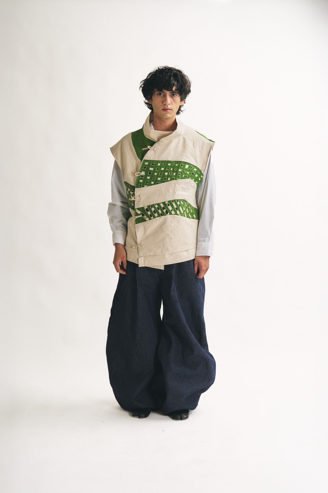
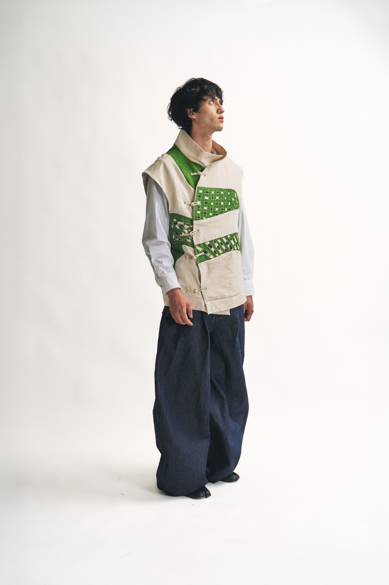
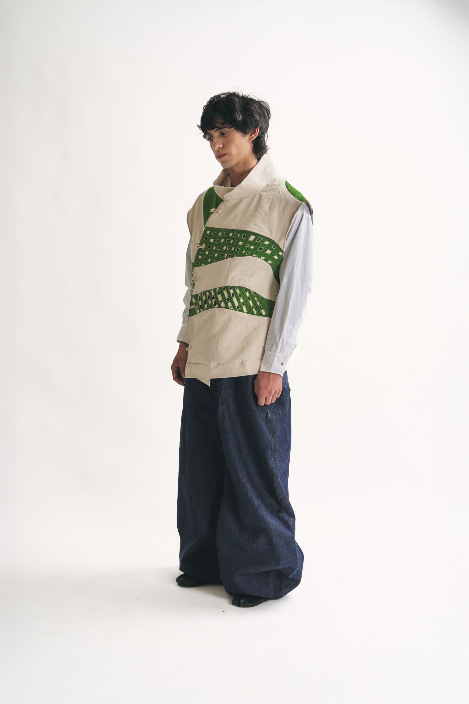
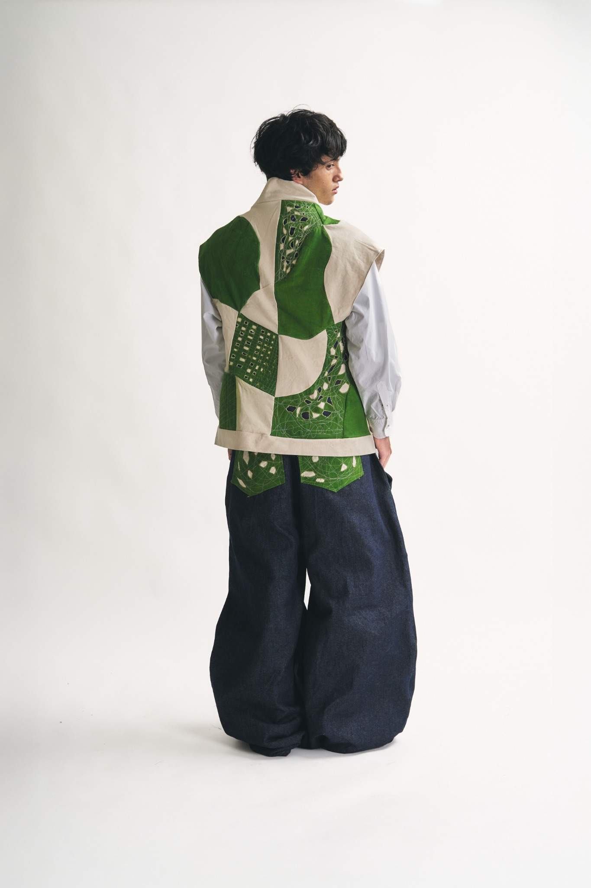

2025 / SUPERFICIES TEXTILES
SHIGOTO.
Patronaje experimental, siluetas de trabajo japonesas reinterpretadas en contexto chileno y superficies intervenidas en capas.

EL PROYECTO.
Patronaje experimental, siluetas de trabajo japonesas reinterpretadas en contexto chileno y superficies intervenidas en capas.
PROYECTO FÍSICO / NO REQUIERE DEMO WEB
EXPERIENCIA / REGISTRO.
Registro fotográfico de SHIGOTO. La secuencia muestra distintas vistas del look para evidenciar patronaje experimental, capas, superficie intervenida y la reinterpretación de siluetas de trabajo japonesas.



REGISTRO FOTOGRÁFICO / FRENTE + PERFIL + TRES CUARTOS + ESPALDA